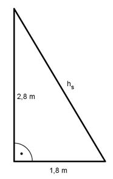

Aufgabe 226 Wie viel Stoff braucht man, um ein Zelt in Form einer quadratischen Pyramide mit einer Höhe von 2,8 m und einer Grundseite von 3,6 m zu bauen?  O = G + M G = 3,6² m² = 13 m² Satz von Pythagoras für die Seitenhöhe hs: hs² = 2,8² m² + 1,8² m² = 11,08 m² |√ hs = 3,33 m 3,6 m * 3,33 m M = 4 * ----------------- = 24 m² 2 O = 13 m² + 24 m² = 37 m²